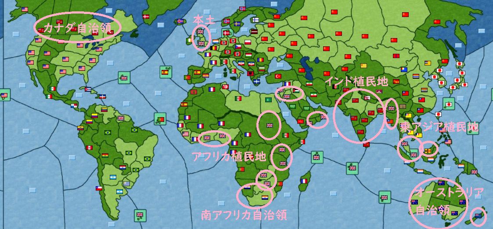

赤い嵐オンライン 第二次世界大戦版 大英帝国 プレイ記録http://kakolog02.g1.xrea.com/red_ww2/ww2new_18.html
【ゲーム説明】
赤い嵐は「信玄の野望」というサイトで公開されている多人数ゲームです。今回はイギリスを担当します。
ゲーム終了時に、最も支持率が高かった国家が優勝となります。
【時代背景】
ゲームは第二次世界大戦直前の1938年から始まります。
史実においては前年に日中戦争がはじまっており、翌年に第二次世界大戦が勃発、さらに3年後に日米戦争が始まりました。
【現状確認】
（領土）

ピンクで示された部分がイギリスの勢力圏となっている。
北米にカナダ、アフリカにエジプトと南アフリカ、オセアニアにオーストラリア・ニュージーランドなどの国家を属国として従え、さらにアジア・アフリカに広大な植民地を保有している。
（外交）
主要な国家としては、アメリカ・フランス・ドイツ・イタリア・ソビエト連邦・中国・日本が挙げられる。
特に警戒する必要があるのはアメリカとドイツであろう。この2か国は経済力で我が国を上回っているため、単純に我が国よりもより多くの軍隊を生産することができる。
ドイツは西にフランス、東にソ連という仮想敵国に挟まれているためイギリスを攻撃してくる可能性は低いが、アメリカは周囲に有力国がおらずフリーハンドを得ているおり、イギリスにとって非常に脅威である。
（経済）
このゲームでは経済の概念は、食料・工業製品・地下資源(石油)の3つに集約されているが、その中で最も重要なのが地下資源である。
地下資源が不足すると直ちに国民生活や工業が打撃を受けるだけでなく、海軍を動かすにも地下資源は必要になっている。(陸軍は石油を消費しない)
その地下資源だが、史実同様算出する地点は非常に偏っており、これらの地域を確保することは軍事的にも経済的にも非常に重要である。
（マップは色付きが大国支配下の油田、白が中小国支配下の油田）
【イギリスの方針】
まずは何においても生き残ることが第一優先である。特に警戒が必要なのがアメリカであり、とにもかくにもアメリカの動きを封じることがこのゲーム全体を通しての方針となるだろう。
【序盤】
（中国問題に関する日中英三か国会議）
まず真っ先に我が国が着手したの中国地域の将来に関する、イギリス・中国(国民党)・日本の三か国会議の主催だった。
このシナリオでは日中戦争の勃発から1年が経過しており、中国はその約半分が日本側の領土となっている。(正確には日本傀儡政権の領土)
これに関して、この先中国地域をどうするのか三か国で話し合うわけだが、イギリスの本当の狙いとしては、日本担当が信用にたる人物かを見極め、信用できそうな人物であれば早期の日英共同アメリカ先制攻撃に誘うことだった。
アメリカに経済力で負けているのであれば、日本と同盟を組み、さらにアメリカの準備が整わないうちに奇襲攻撃をかけようという算段である。
しかし途中から日本担当がゲームにログインしてこなくなったため、この会議はあっさり流れ、日英対米奇襲案も白紙撤回となった。
（英ソ協定）
ソ連とはひとまずトルコ・イラン・アフガニスタンのラインを中立域とすることで合意する。
（サウジアラビアの陣営加入）
中東方面ではサウジアラビアに対して陣営加入を誘ってみる。
サウジアラビアは重要な石油産出地域であり、我が国がサウジアラビアの石油輸出を管理することで、有力な油田を持たないドイツ・イタリアに対して交渉優位に立つ作戦であった。
陣営加入交渉はイギリス支配下のアラブ人地域を一部サウジアラビアに引き渡すという条件で合意し、我が国は石油確保において他国陣営を一歩リードする。
（インドネシア危機）
このゲームには亡命政府というシステムが存在し、通常亡命政府にプレイヤーが入ることは少ないのだが、なぜか今回はインドネシア亡命政府にプレイヤーが入った。
インドネシアはオランダ植民地であり、特にパレンバンは石油を算出するため非常に重要である。
以後この亡命政権をめぐって、独立したいインドネシア、独立を防ぎたいオランダ、オランダから石油を輸入したい、あわよくばオランダを陣営に入れたいドイツ、インドネシア独立を口実に南下してくる可能性のある日本、東南アジアで日本の勢力は拡大するのは避けたいけど、日本と本格的な戦争はしたくないし、またオランダをめぐってドイツと対立するのも避けたいけど、ドイツに産油地帯は渡したくないイギリス、それらを不気味に見守るアメリカなどを含めた外交戦が繰り広げられる。
(外交戦の詳細はあまりにも複雑すぎるのでカット)
（ドイツの欧州電撃作戦）
ゲーム開始直後、ドイツは電撃的にデンマーク・スウェーデン・ノルウェーを軍事攻略していく。
電撃的に、というのはそれらのプレイヤー無し国家に対する軍事占領は、(イギリス含め)他国に全く相談なしに行われていた。
この行動についてイギリスは全くもってドイツの拡大を制止することができず、以後欧州の一部を占領したドイツは経済力をさらに拡大させていく。(特に痛かったのが、産油地帯であるオスロの占領であり、これによってドイツは他国に依存しない独自の油田を確保することになる)
もちろんイギリスとしてもドイツの行動を警戒していたのだが、ドイツとの本格的な対立を避けようとしたため、フランスやイタリア、ソ連などと歩調を合わせた行動を計画するしかなく、そうした交渉をしているうちに今度はフランス担当が未ログインになり、あたふたしているうちにパリまでドイツが占領してしまう羽目になった。
やろうと思えばドイツに対して断固たる行動、例えば侵略計画について再考を迫るとか、もっと過激に侵略計画を放棄しないと宣戦布告するなどの交渉も可能ではあったが、それをしてしまうとドイツ・アメリカが手を組んでイギリスを包囲する危険性があったため、どうしても消極的な行動に終始するしかなかった。(言い訳)
さらにイタリアもフランス領土で産油地帯のアルジェを占領してしまう。イタリアも初期状態で油田を持たないので、石油貿易を対価にイギリスに協力させられる国家だったのだが。
（アメリカ・イタリア）
それは突然の出来事であった。
ルーズベルト「イタリアと不可侵結びます」
もちろんこれが不可侵のみのに留まるはずがない。イタリアとアメリカが親密状態にあるということは、今後さらにその関係が発展する可能性が大きいということである。
最悪の場合、イタリアがアメリカ陣営入りし、欧州にアメリカの橋頭保が確保されたり、イタリアがイギリスのアフリカ植民地を、アメリカがイギリス本土を攻撃してくる可能性も大いにあり得る。
このころより、イギリスはアメリカ本土先制攻撃作戦の準備を開始し始めていた。
（中国情勢）
日本が未ログインにより削除されたため、中国大陸は中国国民党政権と自立した満州国が北京、南京の日本傀儡政権占領地を分割支配していた。
イギリスとしては中国大陸がどうなろうとかまわなかったが、国民党がアメリカ陣営入りして仮想敵国が増えるのだけは困るので、なにかと気を使った外交を展開していく。
（米独連合）
ドイツとの外交中。
イギリス「英独で対米戦やれたら最高なんですが、興味ないですよね」
ドイツ「北米侵攻する場合中継基地が欲しいです。具体的にはアゾレス諸島やカーボベルデ諸島。それが有れば乗ります」
イギリス「マ？でしたら北米侵攻の期間中のみ、イギリス軍が基地提供しますよ」
イギリスとしてはドイツがアメリカ本土進攻に乗ってくるのは意外であったが、最大の脅威であるアメリカをドイツと連合して叩ける絶好の機会であるため、二つ返事で了承する。
（ブラジル中立化）
アメリカ本土進攻を前にして、ブラジルからアメリカ陣営入りしないという確約を貰うことに成功する。
「世界大戦にある程度決着が見込まれるまで」という条件付きではあるが、世界大戦にある程度決着がついた時点でブラジルがどの陣営に参加しようと大勢に影響はないので実質無問題である。
（日本新政権誕生）
長らく担当者不在であった日本に新規プレイヤーが参戦する。
日本は大陸領土を国民党、満州国に分割されており、残った日本本土をめぐってソ連、アメリカ、日本の熾烈な外交戦が展開されるが、最終的に日本がソ連に5兆ドルの支払い+札幌の割譲を行い、日本はアメリカ陣営入りで決着となった。
(もちろん、日本からソ連へ莫大な資金が流れたことは英国プレイヤーの知るところではない、本記事にその事実をかけるのはゲーム終了後にログを閲覧したためである)
（アメリカ本土進攻）
ついに、かねてより計画していた、英独連合によるアメリカ本土進攻が実施される。
作戦は英独の奇襲に始まり、ドイツ軍のアトランタ上陸作戦や、イギリスのヒューストン上陸作戦により英独連合がアメリカ大陸に橋頭保を確保する。
しかしアメリカの抵抗も激しく、ドイツが一度占領したヒューストンを奪還するなど、一進一退の攻防が続いた。
またドイツ軍により、アメリカ合衆国首都ワシントンへ人類史上初の核攻撃が実施。これによりアメリカ・ドイツの支持率が急落する。(核兵器は攻撃地点の産業を壊滅させるが、同時に使用国の支持率も大きく低下する)
結局、英独連合軍は上陸地点をアメリカ軍の必死の攻撃から守り切る程度のことしかできず、内陸部への侵攻が叶わなくなった時点で講和を模索することとなった。
（講和交渉）
英独では交渉がまとまらず講和案の提案が遅れたため、先にアメリカから事実上の白紙和平による講和提案が行われる。
ドイツは賛成を示すが、ここで我が国イギリスが待ったをかける。
というのも、アメリカ戦役の戦闘を分析してみると、アメリカは経済には相応のダメージを受けているが、軍はほぼ無傷という事実が浮かび上がってきた。
イギリスとしては今回のアメリカ本土進攻により、アメリカによる将来のイギリス侵攻の可能性を完全に潰すことを目論んでいたが、そのためにはアメリカの軍や経済への一層のダメージか、あるいは賠償金等による足枷をアメリカに与えうる必要があると判断したのである。
（原文ママ）イギリス帝国 → ドイツ第三帝国2020/10/25(日) 21:12:19
すみません、やはり賠償金かヒューストンを奪うまで継戦しませんか？
というのも、戦史をよーく分析してみたのですが、今回の戦争でアメリカはほとんど疲弊していません。
経済は相応のダメージを受けていますが、アメリカ軍はほぼ無傷です。
この状況で講和すれば近いうちにヨーロッパに米軍が逆上陸してくる可能性は低くないかと。
燃料さえなければ大西洋渡ってこれないはずなので、ヒューストンはやはり欲しいところです。
我が国は石油備蓄的にこれが最初で最後の大西洋横断になると思いますので、今回で決着をつけておきたいです。
この時、北米最大の産油地帯であるヒューストンはイギリス軍の占領下にあり、この地の割譲をアメリカが認めるまで、徹底抗戦することをドイツ側へ提案している。
またこの時考えられていた最悪の展開として、講和後の米独によるイギリス本土進攻ということも想定されていた。
「何としてもアメリカにダメージを与えるまで、戦争は継続されなければならない」
「どのみち、産油地帯であるヒューストンは我が軍が占領しているのであるから、戦闘における英独連合軍の優位は揺らがないであろう」
その時はそう考えていたのである。
（ヒューストン陥落）
アメリカ軍によるヒューストン奪還作戦。
本来であれば、防衛側は資金さえあれば現地で新兵を生産することで、確実に占領地を防衛できるはずであった。
しかし、イギリス政府はここでヒューストン防衛のための費用を出し惜しみ、その隙をアメリカ軍に衝かれてしまう。
ヒューストン陥落、アメリカ軍がヒューストンを奪回。
これにより英独連合軍は北米大陸で唯一にして最大の戦果、そして戦闘における優位を失ったのである。
（講和交渉２）
ヒューストンをイギリスのミスにより失ったため、英独連合軍は講和をするしかない状況に陥った。
そこでイギリス政府が閃いた策が、アメリカがイギリスへ毎年、大量の石油を輸出するという講和案である。
賠償金や領土の割譲ではなく、代金を支払う貿易であればアメリカ側も納得しやすく、また石油がなければアメリカは大西洋を渡れないため、イギリスの安全も保障されるわけである。
（ソ連の南下）
イギリス軍主力がアメリカ大陸で戦っているのを見て、ソ連がイランを自国陣営に加盟させる。
イランは英ソの協定で中立としていたため、ソ連側の明確な協定違反であるが、ソ連を刺激しすぎても現在はソ連と戦争する余裕はないため、ここは協定違反を黙認する。
（中国国民党政府との攻防）
イギリスのアメリカ本土進攻に連動し、中国国民党がアメリカ側で参戦する。
南シナ海が中国により制圧され、ボルネオ島が中国軍に占領されるが、イギリスが急造したシンガポール＝マレー半島の防衛ラインによりこれ以上の中国の南下は防がれる。
どうやら、中国政府にはこのままオランダ植民地インドネシアまで制圧して、インドネシア亡命政権を独立させる構想があったようだ。
（ソ連の中国侵攻）
ソ連が暴走する中国国民党に懸念を示し、宣戦布告する。
ウルムチから延安への内陸侵攻ルートは山岳突っ切るルートのため中国が防衛に成功するも、ウラジオストクのソ連極東艦隊による武漢上陸作戦により、背後から中国はソ連に本土の一部を占領される。
また敏感に状況を察知した満州国がソ連陣営入りした。
（アフリカ侵攻作戦）
アメリカとの講和が成立したことで、イギリスは担当者不在のフランス領アフリカへ軍事侵攻を行う。
というのも、このゲームには平和度というパラメーターが存在し、先の米独アメリカ侵攻作戦でこの平和度が低下していた。
これにより軍事侵攻を行えば行うほど支持率が上昇するという状況になっており、以降仏領アフリカの占領でイギリスはどんどん支持率を上げていく。
（対米講和時の領土状況）
英独vsアメリカの大戦争に関して決着がついたので、ここで一度状況を整理してみたい。
世界は主にイギリス・アメリカ・ドイツ・イタリア・ソ連・中国国民党の5つのグループに分けられる。
インド帝国・サウジアラビア・オーストラリアはイギリス同盟国、日本はアメリカ同盟国、満州・イランはソ連同盟国、オランダはドイツ同盟国である。
（英独ソ三国同盟構想）
米独講和後、ソ連が突然英独へ英独同盟への加盟を要請してきた。
ソ連としては中ソ戦争でアメリカが圧力をかけてきており、英独の同盟に加わることでアメリカへの抑止力とする考えがあったようだが、そもそも英独同盟は対米戦争の期間限定の同盟であった。
既に決定した正式な英独米講和条約でも、英独同盟の終了が講和条件として明記されている以上、英独同盟は終了しなければならない。
そのため、この話は立ち消えとなった。(とばかり英国は思っていた)
（ドイツの策謀）
対米戦争で最も割を食らったのはドイツであった。
ドイツはアメリカへの核攻撃によって支持率を大きく低下させたものの、得られるところはほとんど何もなかった。
それに対して、わが英国は核攻撃を実施しなかったため、支持率へのダメージはほとんど存在しない。
(ちなみにアメリカは本土が戦場となったため、経済へ大きなダメージがあった)
英独同盟という建前でありながら、事実上英国の一人勝ちのような戦争であったため、ドイツプレイヤーはここで戦後の国策を対英国へ大きくシフトする。
さらに英独同盟入りを希望していたソ連もドイツ陣営へ参加し、対英を意識した独ソ同盟が成立した。
ちなみに、ソ連はドイツ・中国国民党による挟み撃ちを警戒したようだ。
（スターリンの策謀）
ドイツ陣営入りし、ドイツの後ろについて2位狙いを決めたソ連は、中国国民党と秘密裏の単独講和を行う。
ソ連としては、英中の戦争を意図的に長引かせることで、英国の消耗を狙う戦略であった。
（イギリス史最大の愚行）
イギリスはアメリカとの講和成功により、対中国国民党戦争に専念できるようになった。
しかし、イギリス本土から中国へはあまりに遠い。果てしなく遠い。
本来であればここで適当な条件で講和すべきであったが、国民党政権が徹底抗戦の構えを崩さなかったため、英国は脅し文句どおり対米戦争で使用した主力艦隊の中国派遣を決定する。
しかし、それはあまりにも愚かな決断であった。
結局、大西洋の対米用艦隊を極東まで派遣するため、イギリスは膨大な量の石油を消費し尽くすこととなった。
おそらくこの艦隊派遣のみで、対米戦争と同程度の資金が石油輸入代として消えた。たかが極東の植民地の一つや二つ、くれてやっても全く問題はなかったのだが。
（ソ連陣営の憂鬱）
イランさんが盟主国ソ連の戦略について、なかなか面白い発言をしていたので一部改編の上、掲載。
（一部改変）イラン帝国のソビエト連邦陣営発言2020/10/29(木) 14:14:20
最終的にはソ連殿の御決断に従いますが、そもそも陣営に加わらないといけない程状況が切迫している訳では無いですし、
仮に陣営に加わるとしてもドイツ殿の陣営に加わる位ならばまだ英国殿の陣営に加わる方がマシだと思いますよ。
正直、彼の国の外交と軍事の手腕を見るにドイツ陣営に加わるとこちらを巻き込んで沈む未来しか見えません。
二位狙いという事ですが、ドイツ殿が一位を取るのは無理でしょうね。
実力的に無理というのもありますが、対米戦の動きを見るにドイツ海軍は貧弱でしょう。
今から増強しても間に合いませんし、英国なり米国と対抗できる状態にはならないかと。
イタリアが居る以上、陸軍を全捨ても出来ないでしょうし。
ソ連殿がドイツ陣営に加盟した状態で、ドイツ陣営として二位を目指す、という事ならまだ可能性はありますけど、
ソ連陣営として二位を目指すならともかくドイツ陣営を二位につけるのを目指すとなると流石に一線を超えるかと。
ソ連殿は独ソ戦で勝った後に英米に負けると踏んでいたようですけど、
英国殿からすると、陸軍国でしかないソ連より海軍国であり一度交戦したアメリカの方が遥かに重大な脅威です。
外交努力を尽くせば六割五分程度はこちら側に味方したと思いますけどね……。
それに仮に米英を纏めて相手したとしても、ドイツに投資するよりはまだソ連単独でユーラシアを抑えて逃げ切れる可能性の方が高かったと私は見てますよ。
正直、内政版のポイント計算がどう行われるのか完全には把握していないので何とも言えませんけどね。
これに対する盟主ソ連の返信
（一部改変）ソビエト連邦のソビエト連邦陣営発言2020/10/29(木) 20:04:42
ドイツ1位、ソ連2位狙いです
大まかに言うとドイツは英本土
ソ連は中東、国民党は東南アジア～インドを攻める作戦です
助言ありがとうございました
さらにソ連からドイツへ
（原文ママ）ソビエト連邦 → ドイツ第三帝国2020/10/29(木) 20:43:59
昨日は独ソで絶対英国に勝てる！と意気込んでたけど
陣営内で指摘されて怖くなってきた
不安です、何がなんでも突き進むしかないですが
ドイツ1位、ソ連2位行きましょう！
さらにドイツからソ連へ
（原文ママ）ドイツ第三帝国 → ソビエト連邦2020/10/29(木) 22:46:22
その方針で大丈夫ですよ。
どうも中国はイギリスへの敵愾心が強いようなので
イギリス陣営があの不良債権化しつつ中国大陸で血を流せせている間に
我々は経済を立て直しましょう。
（英国のゲーム終了構想）
ドイツが妥当英国に息巻き、アメリカが経済復興を進めている中、英国は対中戦争と並行して、世界各地のプレイヤーのいない国家の領土を軍事占領して回っていた。
英国としては軍事占領により支持率をどんどん上げていき、そのまま逃げ切る戦略へシフトしている。
（ルーズベルトの憂鬱）
（一部改変）アメリカ合衆国 → インドネシア共和国2020/10/30(金) 20:31:20
英国の優位なのでドイツ・ソビエト陣営が仕掛ける可能性もありますが、
微妙に我が国に対英開戦を勧めてるような雰囲気もあるので英国に先手を取られそうな気もします。
我が国としては、当面は粛々と講和条約を履行するのみですが……
（スターリンの策謀２）
大西洋からはるばる派遣してきた海軍で、英国が中国国民党海軍を蹴散らし、さあいよいよ上陸となったその時、ソ連が中国沿岸領土の購入を実施する。
英国としては目の前に広がっていた無防備な敵国領土が、一瞬にして中立国の領土となったため、まさしく寝耳に水の話であった。
この辺でソ連が中国を裏から支援していると気づいてもよさそうではあるが、空気の読めない鈍感プレイヤーのため全く気が付かない。
なお、国民党は自国領土を外国に売り渡したため、支持率が0％を切りプレイヤー削除された。(何がしたかったんだ)
（国際伝言ゲーム）
（原文ママ）ビルマ国 → イラン帝国2020/11/2(月) 10:54:13
ソ連領から無限に難民流れ込む可能性があるので一応通知しておきます。
ビルマとしては中国の一部領土を占領したソ連が、国内の治安が悪化しており、ソ連と地続きのイランへ難民が流れ込むことを懸念しての発言であったが。
（原文ママ）イラン帝国 → ソビエト連邦2020/11/2(月) 17:38:05
英陣営国から「近くソ連領から大量の難民が流れ込むかもしれないから気を付けろ」と忠告を受けました。
英国殿、そして米国殿が対独ソに動くということかな？まあ普通に考えればそういう事だと思いますが。
軍隊の増強は終わりましたか？特にドイツ殿は大丈夫でしょうか？
先制できればした方が良いですよ。陸に封じ込められたらいくら1000近く揃えていても詰みですから
まあ他人の心配していてもアレですけどね。イランも恐らくは道路になるでしょうから。
イランが勝手に英米vs独ソの予定があると認識。
（一部改変）ソビエト連邦 → イギリス帝国2020/11/2(月) 18:14:14
有事の際に貴国に寝返りましょうか？
対中が済んでドイツ陣営であるメリットが無くなったので
更新前に黃陣営に移って貴国勝利で終わらせるのもありと考えております
多分現状でソ連が英陣営に移ったら
勝利判定はいると思うのでそれで終わらせられる気がします
ソ連的には戦争をしたら確実に領土を減らしそうなので
それを希望ですね・・・
ドイツに決戦を挑むのもありですが、
北海の制海が失敗した場合英本土にゲリラ攻撃をされ
治安壊滅する可能性もあるので
ちょっとずるいですが更新ギリギリにソ連が英国に陣営移籍する方法が
貴国的にも安定策になるかと思います
更新ギリギリにしても気づかれる可能性はあるので確実ではないですが
慌てたソ連がイギリスへ陣営入りを打診してくる事態となった。
（その後）
これ以降、ゲーム終了直前まで大きな戦争など起こらないため、ゲーム終了直前まで20日分ほどバッサリ省略させていただきたい。(ゲーム内では第30ターン以降)
というか、このあたりでプレイヤーの気力が尽き、以降英国はあまり外交しなくなってしまったため、書くことがないのである。
ちなみにドイツ担当プレイヤーもやる気が尽きたのかログインしなくなってしまう。(ソ連は独立)
（ゲーム終了直前 最後の大反撃）
ゲーム終了直前、アメリカが優勝候補のイギリスへ宣戦布告する。
英国はプレイヤーのやる気が落ちていたため、外交的に無警戒であり、かつ完全に内政モード並行していたため、防衛軍が少なく首都ロンドンが陥落。
しかし最後は時間が足らずに首都陥落の状態でイギリス優勝となった。
あと数ターンあれば、イギリスではなくアメリカが優勝していただろう。
（おまけ：ゲーム的教訓）
・内政あり版の海軍は、生産資金よりも活動用石油の確保のほうがネック
・平和度が低い状態での軍事占領は支持率を大きく向上させる